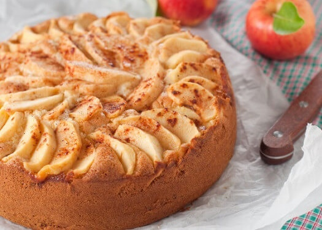

Receita fácil de bolo de maçã com canela, perfeito para café da manhã.
Esse bolo de maçã com canela é super simples, fofinho e tem um aroma simplesmente incrível. Para quem adora a combinação de maçã
e canela, esse bolo é perfeito para você, e se você ainda não provou, vai se apaixonar, é um bolo parecido com o Bolo de banana
caramelizada, as maçãs ficam levemente caramelizadas e o sabor fica maravilhoso!

Como fazer o bolo de Maçã?
Ingredientes:
3 maçãs fatiadas sem casca (guarde as cascas)
3 ovos inteiros
1 xícara de óleo
2 xícaras de farinha de trigo
2 xícaras de açúcar
1 xícara de leite integral
2 colheres (de chá) de canela em pó
1 colher (de sopa) de fermento químico em pó
1 pitada de sal
Modo de preparo:
Bata no liquidificador os ovos, o óleo e as cascas das maçãs
Em uma tigela misture a farinha, o açúcar, a canela e o sal
Adicione a mistura do liquidificador e o leite na tigela (com os ingredientes secos) e misture bem. Adicione o fermento
e misture sem bater muito.
Unte uma forma com margarina e açúcar, coloque as fatias de maçã no fundo da forma e despeje a massa por cima
Leve ao forno pré-aquecido a 180ºC por 35 a 45 minutos ou até que a faca saia limpa
Espere esfriar, desenforme e polvilhe açúcar e canela